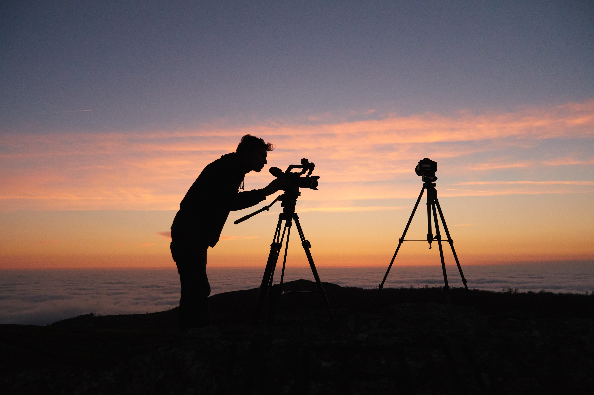

Hello We are became interested in landscape photography about five years ago when I moved to India. I had a full-time job during the week and spent my weekends getting as far away from the city ityas possible. I went on wonderful adventures upstate, away from all the crowds and into the peace and beauty of nature. Photographing the state parks of India inspired me to spend my life traveling the world taking pictures.